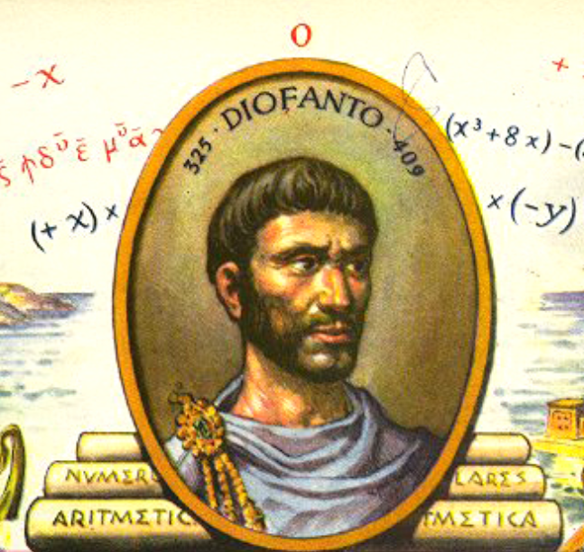

Álgebra de Diofanto: 250
El álgebra de Diofanto, también conocida como ecuaciones diofantinas, fue desarrollada por el matemático griego Diofanto de Alejandría. Este campo se enfoca en resolver ecuaciones polinómicas en las que las soluciones deben ser enteras (números enteros). Diofanto es conocido como el "padre del álgebra" debido a su trabajo en este tipo de ecuaciones, y sus investigaciones fueron fundamentales para el desarrollo de la teoría de números. El álgebra de Diofanto sigue siendo un área importante de estudio en matemáticas, especialmente en la teoría de números y la criptografía.
Volver a la página principal